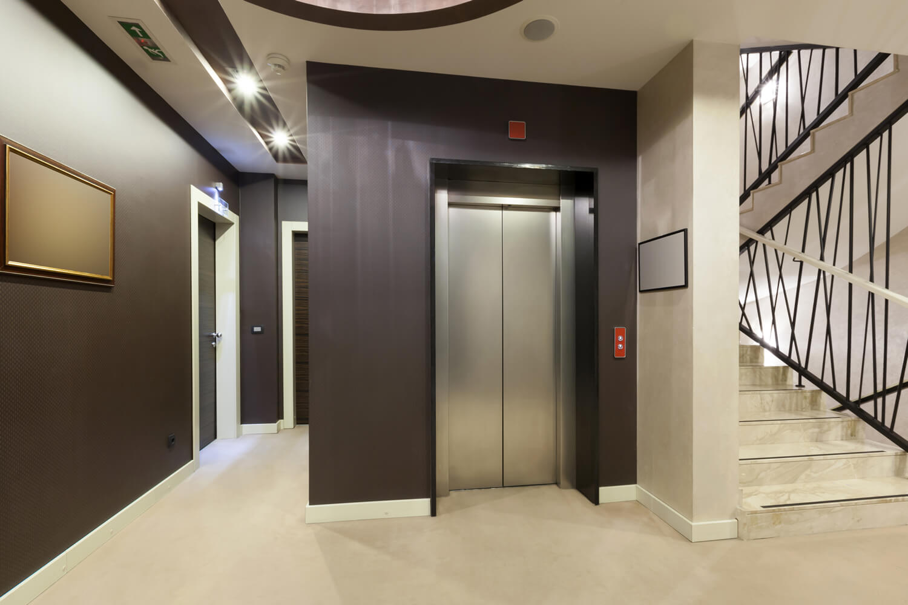
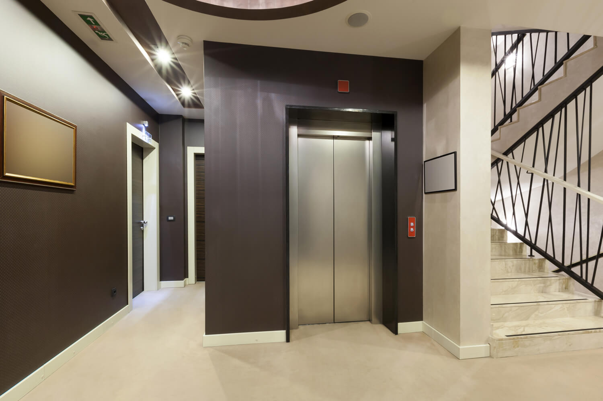
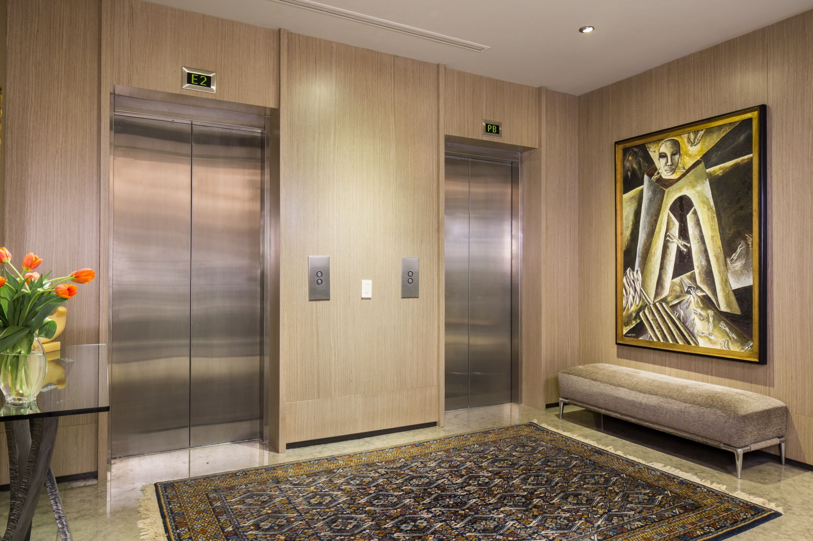
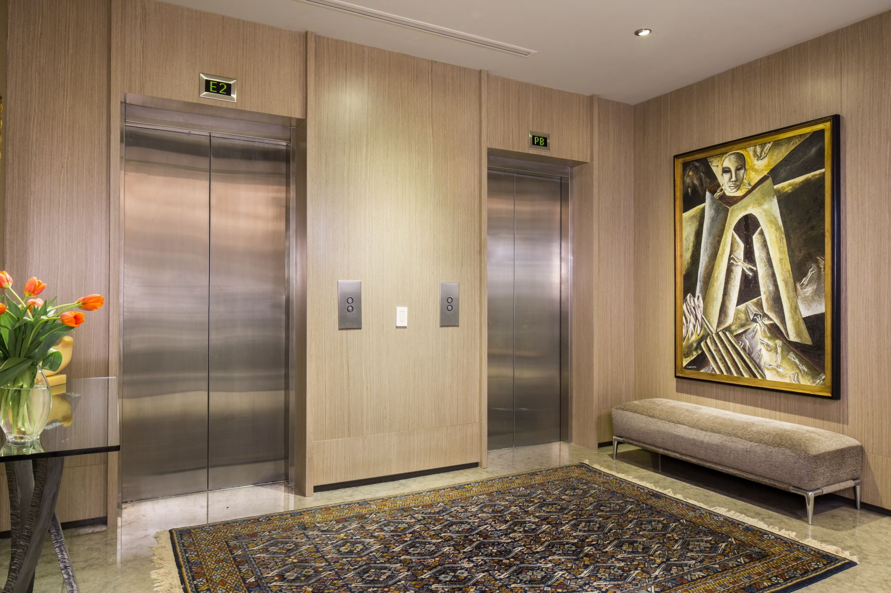

 

Somos Lo Mejor En Reparacion Y Refaciones
CATEGORIA: REFACCIONES
mayo 2019

Un ascensor o elevador es un sistema de transporte vertical, diseñado para mover personas u objetos entre los diferentes niveles de un edificio o estructura. Está formado por partes mecánicas, eléctricas y electrónicas que funcionan en conjunto para ponerlo en marcha.
Ventajas de la prevención
Programar los servicios es conveniente por tres razones principales: Los técnicos detectarán el desgaste de los componentes y ajustarán y lubricarán a tiempo la maquinaria para que tus elevadores no sufran un desgaste extremo, alarguen su vida útil y funcionen correctamente todo el tiempo. Los monitoreos constantes permiten identificar oportunamente cualquier falla, por mínima que sea, que pudiera conducir a descomposturas mayores que signifiquen poner fuera de uso el elevador por periodos prolongados o un peligro para los usuarios.
somos lo mejor en reparacion y refaciones
CATEGORIA: MANTENIMIENTO
mayo 2019

Un ascensor o elevador es un sistema de transporte vertical, diseñado para mover personas u objetos entre los diferentes niveles de un edificio o estructura. Está formado por partes mecánicas, eléctricas y electrónicas que funcionan en conjunto para ponerlo en marcha.
Ventajas de la prevención
Programar los servicios es conveniente por tres razones principales: Los técnicos detectarán el desgaste de los componentes y ajustarán y lubricarán a tiempo la maquinaria para que tus elevadores no sufran un desgaste extremo, alarguen su vida útil y funcionen correctamente todo el tiempo. Los monitoreos constantes permiten identificar oportunamente cualquier falla, por mínima que sea, que pudiera conducir a descomposturas mayores que signifiquen poner fuera de uso el elevador por periodos prolongados o un peligro para los usuarios.